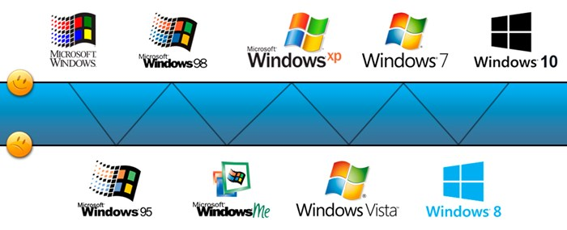
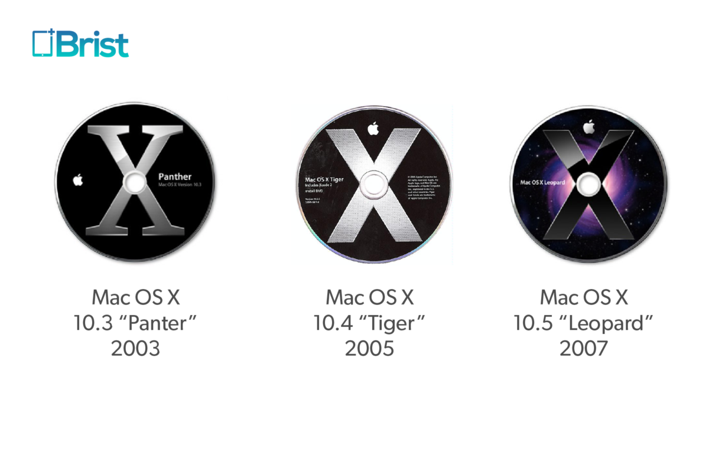

O que devemos saber sobre os sistema operacionais?
Cada sistema operacional tem sua particularidade tendo em vista que todos eles têm seus prós e contras. Não existe um SO perfeito para todos, mas existe um SO para cada tipo de usuário para se adequar a sua necessidade.
Mas se você pretende usar algum Sistema Operacional em definitivo ou migrar de um para outro, vamos apresentar um resumo quem são eles. Mas lembrando de que este artigo não vai ser um xiita e dizer qual é o melhor dos três e sim, iremos abordar as especificações de cada um. O leitor decidirá qual é o melhor para ele.
WINDOWS
O Sistema Operacional Windows é desenvolvido pela empresa Microsoft e seu primeiro lançamento foi em 1985 e atualmente está na sua versão 8. Trazendo um visual repaginado e diferentemente das versões anteriores, como um novo menu iniciar e a interatividade com monitores com telas touch screen. Apesar disso, algumas funcionalidades ainda permanecem como padrão, por exemplo, área de trabalho, atalhos e ícones.
Não é a toa que o Windows é o Sistema Operacional mais presente nos computadores no mundo, “abocanhando” nada mais e nada menos que 92% do mercado de computadores. O SO da Microsoft pode ser instalado em qualquer tipo de máquina ou notebook e não exige uma máquina “superpotente” para ser instalada, mas exige um configuração mínima com um processador com 1 GHz, memória RAM de no mínimo 2 GHz, espaço físico em HD de 20 GB e uma placa gráfica com dispositivo Microsoft Direct X 9.
O valor médio do Sistema na versão atual é de R$ 360,00 sendo esta a mais “enxuta” de suas funcionalidades. (Mas pode ser baixado em qualquer site de torrent existente). Para comparar as diferentes versões, acesse este link: .
Outro fator interessante no SO da Microsoft é a sua instalação. Ela é simples e exige pouco do conhecimento do usuário, sendo didático em suas telas de configuração.
Por fim, as facilidades de uso e a grande variedade de aplicativos e games faz com que o Windows seja um sistema operacional recomendado para usuários em geral.

MAC OSX
O MAC OSx é o Sistema Operacional desenvolvido pela Apple para seus Desktops (iMac’s) e notebooks (MacBook’s). O SO da Apple é baseado no Kernel Unix chamado de OpenDarwin. Apesar da “bagatela” de R$ 70,00 na sua ultima versão conhecida como OSX Lion, este sistema não tem o seu uso recomendado a computadores de outros fabricantes, ou seja, se você quer ser um usuário do MAC OSx, deverá comprar um iMac ou um MacBook que custa em média de R$ 3.000.
Embora o uso do MAC OSx seja apenas destinado aos equipamentos fabricados pela Apple, existem usuários que recorrem a versões não oficiais do sistema para instalar no PC. Essa pratica é conhecida como Hackintosh, mas tal pratica não garante a compatibilidade com hardware e drives em uma máquina comum.
Apesar de ter funcionalidades equivalentes com a do seu rival Windows e também de ter uma gama de softwares compatíveis no mercado, o OSX apresenta um aspecto negativo na parte de games, já que nem todos os títulos encontrados no Windows estão disponíveis no Mac.
Agora, um aspecto positivo para quem deseja usar um Mac é para quem trabalha com artes gráficas, áudio e vídeo. Mesmo que muitos dos aplicativos destas atividades existam também para o Windows, em contra partida, parte das grandes empresas o desenvolvimento é feito na plataforma Mac.
Por fim, o Mac também é uma boa opção para usuários que vive no “mundo Apple”. iPhones, iPads e iPods costumam ter melhor desempenho e compatibilidade neste sistema.

LINUX
Diferentemente dos demais SO’s apresentados, o Linux é considerado o maior ícone do software livre, onde sua distribuição é feita de forma gratuita e seu código é aberto para customização. Usuários que optaram por usar este sistema encontram não apenas uma versão, mas várias, dentre elas temos o Ubuntu (hoje sendo um dos mais populares para usuários), Linux Mint, Debian, Fedora e OpenSUSE. Cada uma destas distribuições tem suas particularidades para atender cada tipo de usuário em especifico.
Por ser um sistema operacional de código aberto, o SO do pinguim é uma boa opção para quem busca customização, mas para isso é necessário um conhecimento avançado em programação, coisa que um usuário comum talvez não tenha.
O fato de acessar o código-fonte torna o Linux um sistema que enche os olhos de estudantes na área de programação e nas diversas áreas da Computação. Mas isso não quer dizer que um usuário comum não possa usar o Linux. O Ubunt, além de ser um sistema leve comparado aos SO’s citados neste artigo, torna uma boa opção para quem tem uma máquina antiga ou lenta para uso de tarefas básicas como navegar na internet, edições de texto, acessar e-mails ou planilhas.
O Linux encontra alguns jogos interessantes, mas se você pretende rodar um jogo do Windows neste Sistema Operacional, você vai encontrar alguns empasses. Recorrer a softwares que emulam algumas bibliotecas do sistema para tentar uma compatibilidade, podem não agradar muito.